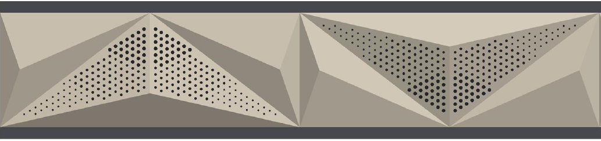
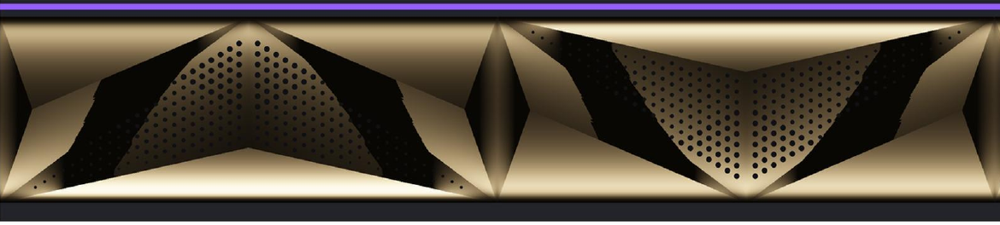
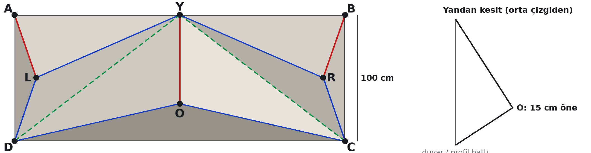
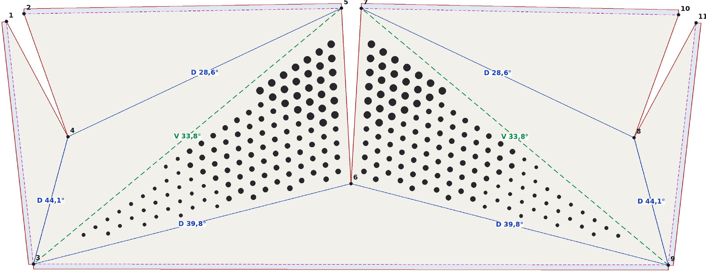
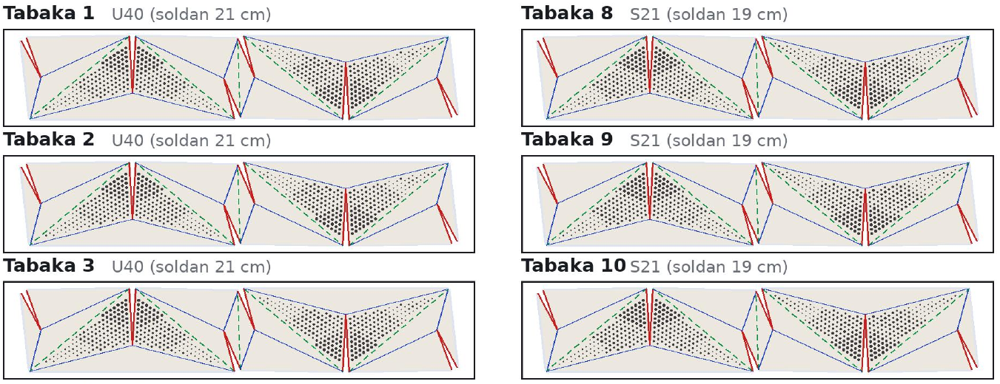
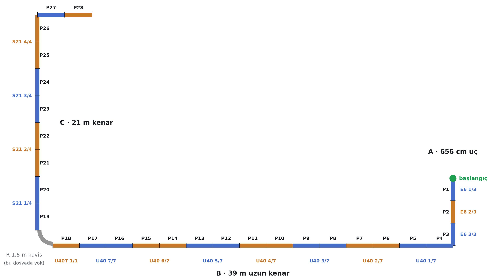
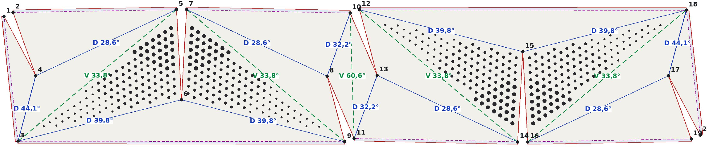
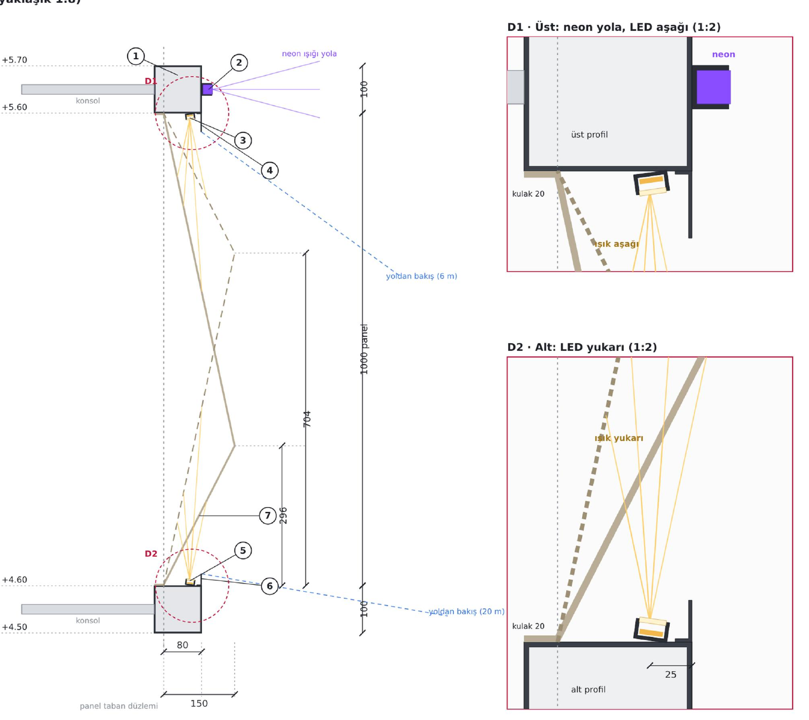

3D tasarımdan CNC kesime kadar her adım tek bir üretim dosyasında. Gerçek bir projenin sayfaları:


Model, gündüz ve gece aydınlatma görünüşü
Her nokta x · y · z olarak ölçülendirilmiş

Dağ / vadi çizgileri derece derece

17 parça, 14 tabakaya (1250 × 6000 mm)

Hangi parça, nereye, hangi sırayla

Katmanlı DXF / DWG · ölçek 1:1 · mm

Atölye ölçü sormadan keser, büker, monte eder.
Çizim doğrudan kesim makinesine gider. CNC router ve lazer CAM programları DXF / DWG dosyasını doğrudan açar.
KESIMkontur, yarıkDELIKØ30 / 22 / 15DAG_KANALdağ katlamaVADI_KANALvadi katlamaKULAK_KANAL2 cm kulakYAZIparça adı, açıMimar olarak tasarlıyor, render alıyor, çiziyor ve üretime hazırlıyorum.

Gündüz ve gece görünüşüyle, karar vermeden önce görün
Kesit, bağlantı, aydınlatma ve montaj detayları
Açılım, katlama açıları, tabaka yerleşimi, montaj sırası
DXF / DWG, doğrudan makineye
Kompozit üreticileri ve mimarlar için çizim desteği